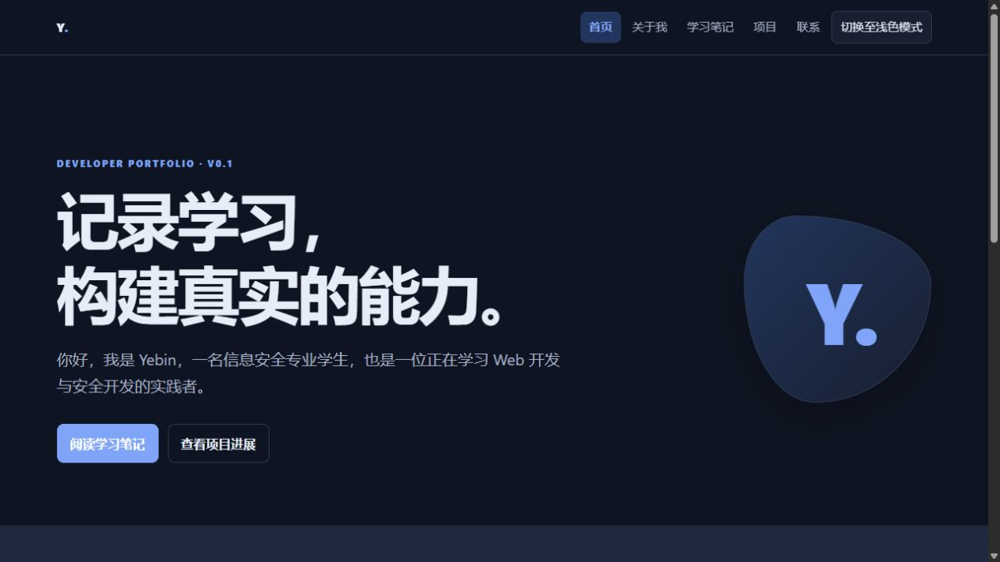
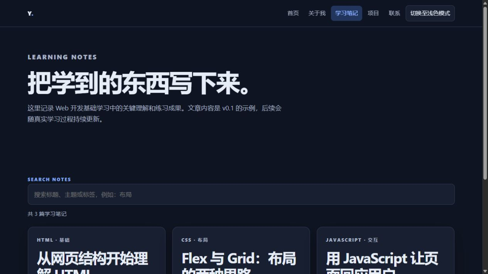

Project Goal
把学习过程变成可见成果
用统一的网站结构沉淀学习笔记、项目进展与个人开发方向，让每一次练习都可以被回顾和继续完善。
Project Goal
用统一的网站结构沉淀学习笔记、项目进展与个人开发方向，让每一次练习都可以被回顾和继续完善。
Tech Stack
不使用框架、后端或第三方依赖，先专注理解原生 Web 的页面结构、样式组织和交互逻辑。
Core Features
每一项功能都围绕“方便记录、方便阅读、方便继续迭代”设计。
首页、关于我、学习笔记、项目和联系页面使用统一导航与页脚，内容边界更清晰。
首次打开跟随系统主题，手动切换后将偏好保存到本地，并在全部页面保持一致。
通过原生 JavaScript 按标题、摘要和标签实时筛选示例笔记，支持空结果提示。
首版只公开学习方向与项目成果，不展示联系方式、住址、真实照片或其他敏感个人信息。
Public Preview
以下截图来自当前公开版本，用于记录 v0.2 的页面成果。

